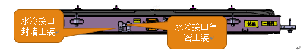
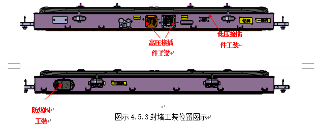

直冷气密测试
按照以下公式计算泄漏量LL=ΔP*V/(Δt*P1)式中：L：泄漏量，mL/min；ΔP：压力差，Pa；V：冷却板内部等效容积，mL；Δt：测试时间，min；P1：标准大气压，Pa。

整包气密测试

注意事项：测试过程中不得触碰设备按钮、气管接头及封堵工装。气密测试不合格进行漏点排查时，需用封堵工装对2个防爆阀进行封堵，再对整包进行充气，当发现上盖有轻微凸起变形后停止充气，用肥皂水涂抹在上盖与箱体搭接缝、接插件安装面、箱体焊缝等区域，观察有无气泡或气泡变大现象产生。